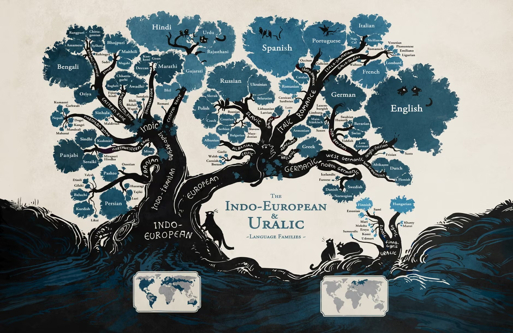
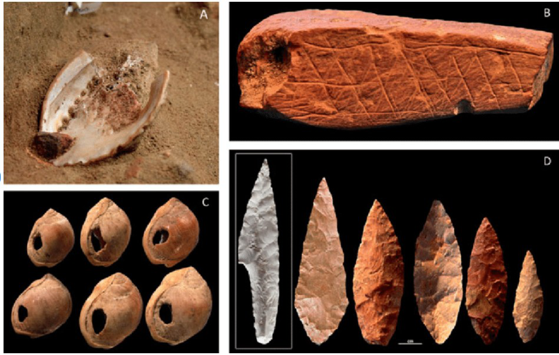

AIT3018 · Học kỳ I, năm học 2026-2027
Viện Trí tuệ nhân tạo · Trường Đại học Công nghệ, ĐHQGHN
Mình nói hai chữ “cái ghế”. Trong nửa giây ấy, điều gì vừa đi từ đầu mình sang đầu các bạn?
Ai đó giơ chiếc ghế xoay có tay vịn lên và hỏi: “Cái gì đây?”. Bạn trả lời bằng từ nào?
Mervis và Rosch (1981) là bài tổng quan: tổng hợp nhiều nghiên cứu, không báo cáo một thí nghiệm riêng.
Ngôn ngữ là gì → nghiên cứu nó ra sao → nó vận hành thế nào → nó từ đâu ra
Language: ngôn ngữ có nhất thiết phải là âm thanh?
| Nguồn | Ngôn ngữ là... | Kênh |
|---|---|---|
| Britannica | hệ thống ký hiệu quy ước để người trong một nhóm xã hội, một nền văn hóa biểu đạt bản thân | nói, ký hiệu tay, viết |
| Henry Sweet | sự biểu đạt ý tưởng bằng âm thanh lời nói ghép thành từ, từ ghép thành câu | âm thanh |
| Bloch và Trager | hệ thống ký hiệu âm thanh võ đoán, giúp một nhóm xã hội hợp tác | âm thanh |
Theo từng định nghĩa, ngôn ngữ ký hiệu của người khiếm thính có được tính là ngôn ngữ không?
Điểm chung: hệ thống ký hiệu có quy tắc, để giao tiếp.
| Tầng | Thuật ngữ | Nghiên cứu | Ví dụ tiếng Việt |
|---|---|---|---|
| Ngữ âm học | phonetics | âm được tạo ra, nghe ra sao | cách phát âm “tr” và “ch” |
| Âm vị học | phonology | âm nào làm đổi nghĩa | “ma, má, mà” nhờ thanh điệu |
| Hình thái học | morphology | cấu tạo từ | “học” + “sinh” → “học sinh” |
| Cú pháp học | syntax | ghép từ thành câu | “chó cắn mèo”, “mèo cắn chó” |
| Ngữ nghĩa học | semantics | nghĩa của từ và câu | “mèo” chỉ một loài vật |
| Ngữ dụng học | pragmatics | nghĩa trong ngữ cảnh | “Mấy giờ rồi?” khi bạn đến muộn |
Hỏi trợ lý ảo “Bạn có biết mấy giờ rồi không?”, nó đáp “Có.” Nó trượt ở tầng nào?
Một hệ thống ký hiệu và quy tắc
Mỉm cười, ánh mắt, điệu bộ
Bạn gửi tin nhắn “Mình đến rồi” nhưng không nói thành tiếng. Có ngôn ngữ không? Có lời nói không?
Cùng một con vật: “chó”, dog, 狗 (gǒu).
Hình thành và được dùng trong cộng đồng.
Ký hiệu đại diện cho ý tưởng.
Âm, từ, câu kết hợp theo quy tắc.
Kênh phổ biến nhất; ngôn ngữ ký hiệu dùng tay.
Một ngôn ngữ cụ thể phải học.
Tạo và hiểu được câu chưa ai nói.
Truyền ý giữa người với người.
Hệ nhiều tầng, phức tạp; chưa thấy ở loài khác.
Thay đổi theo thời gian.
“Không do bản năng” nói về một ngôn ngữ cụ thể. Năng lực học ngôn ngữ có cơ sở sinh học; nó chuyên biệt đến đâu thì còn tranh luận.
Phần lớn người nói tập trung vào một số ít ngôn ngữ. Phần lớn ngôn ngữ thuộc về những cộng đồng nhỏ.
Bức tranh khái quát từ học liệu 2024-2025. Số lượng thay đổi theo năm và cách phân loại ngôn ngữ.
| Ngôn ngữ | Tỉ lệ trong 10 triệu website hàng đầu | Tỉ lệ dân số thế giới |
|---|---|---|
| Tiếng Anh | 60,4% | 16,2% |
| Tiếng Nga | 8,5% | 3,3% |
| Tiếng Việt | 1,7% | 1,0% |
| Tiếng Trung | 1,4% | 14,3% |
Thêm một triệu bài báo tiếng Việt có giúp chatbot hiểu “Răng giờ ni chưa tới?” không? Bạn sẽ kiểm tra thế nào?
Số liệu năm 2021 (W3Techs), qua infographic của Visual Capitalist.

Họ ngôn ngữ: các ngôn ngữ cùng kế thừa từ một ngôn ngữ mẹ.
Tiếng Anh, Hindi, Nga, Tây Ban Nha cùng họ Ấn - Âu. Niên đại ngôn ngữ mẹ được ước tính khoảng 6.000 đến 8.000 năm hoặc hơn, còn tranh luận.
Trên cây này có tiếng Việt không?
Một phần lớn từ vựng tiếng Việt có gốc Hán. Vậy tiếng Việt có thuộc họ Hán - Tạng không?
| Ngôn ngữ | Họ |
|---|---|
| Tiếng Việt | Nam Á (Austroasiatic), nhánh Việt (Vietic) |
| Tiếng Khmer | Nam Á |
| Tiếng Thái | Tai - Kadai |
| Tiếng Trung | Hán - Tạng |
| Tiếng Anh | Ấn - Âu, nhánh German |
Cây họ dựa vào quan hệ kế thừa: đối chiếu nhiều từ cùng gốc và các tương ứng âm đều đặn; phải tách chúng khỏi từ vay mượn.
| Hệ chữ | Đơn vị được ghi | Ví dụ |
|---|---|---|
| Ghi từ (logography) | từ hoặc hình vị | Hán, Nôm |
| Âm tiết (syllabary) | âm tiết; kana ghi mora | Hiragana, Katakana |
| Phụ âm (abjad) | chủ yếu phụ âm | Ả Rập, Hebrew |
| Abugida | phụ âm kèm nguyên âm | Thái, Khmer |
| Chữ cái (alphabet) | phụ âm, nguyên âm ghi riêng | Quốc ngữ |
Tách các từ trong câu: “Học sinh học sinh học”.
Học sinh | học | sinh học. Dấu cách tiếng Việt thường ngăn âm tiết, không đánh dấu sẵn ranh giới từ.
| Trong nghiên cứu 2011 | Âm tiết mỗi giây | Thông tin mỗi giây (tiếng Việt = 1) |
|---|---|---|
| Tiếng Tây Ban Nha | 7,82 | 0,98 |
| Tiếng Quan Thoại | 5,18 | 0,94 |
| Tiếng Việt (mốc tham chiếu) | 5,22 | 1,00 |
Cùng nội dung, bản tiếng Tây Ban Nha được đọc với nhiều âm tiết mỗi giây hơn. Vậy nó truyền tin nhanh hơn?
Còn phải biết mỗi âm tiết mang bao nhiêu thông tin.
Pellegrino, Coupé và Marsico (2011), Bảng 1. Chỉ số thông tin tương đối, không phải số bit.
| Loại biến thể | Thuật ngữ | Khác nhau theo | Ví dụ |
|---|---|---|---|
| Giọng | accent | cách phát âm | giọng Nghệ, giọng Huế |
| Phương ngữ | dialect | vùng | “mô, tê, răng” ở miền Trung |
| Phương ngữ xã hội | sociolect | nhóm xã hội | dân IT nói “deploy”, “fix bug” |
| Tiếng lóng | slang | mức chính thức | “khum”, “u là trời” |
| Ngữ vực | register | tình huống | phát biểu hội nghị, kể chuyện ở quán |
| Lối nói cá nhân | idiolect | từng người | câu cửa miệng của một người bạn |
Trợ lý đổi mọi “mô, tê, răng” thành từ Hà Nội rồi báo “đã sửa lỗi tiếng Việt”. Bạn có chấp nhận cách gọi ấy không?
Phổ quát ngôn ngữ: đặc điểm được đề xuất là chung cho mọi ngôn ngữ. Muốn khẳng định phải khảo sát sự đa dạng, không chỉ vài tiếng quen thuộc.
| Cùng điều muốn nói | Tiếng Việt | Tiếng Anh |
|---|---|---|
| Sự việc trong quá khứ | Hôm qua mình đi học. | Yesterday I went to school. |
| Phủ định | Mình không biết. | I do not know. |
Cùng chức năng giao tiếp không có nghĩa là cùng cấu trúc ngữ pháp.
Danh từ, động từ, đại từ, đệ quy: phạm vi áp dụng và cách định nghĩa những phổ quát này vẫn được tranh luận.
Ngữ pháp phổ quát (UG): giả thuyết về những ràng buộc bẩm sinh, chuyên biệt cho việc học ngôn ngữ.
| Lập luận ủng hộ | Điều Dąbrowska (2015) chất vấn |
|---|---|
| Phổ quát: các ngôn ngữ có nguyên lý chung | Những nét nào thực sự chung? Có cần giải thích bằng UG? |
| Hội tụ: trẻ đạt tri thức tương tự dù đầu vào khác nhau | Người trưởng thành có thực sự đạt cùng một ngữ pháp? |
| Nghèo nàn kích thích: đầu vào không đủ để suy ra tri thức đạt được | Thông tin liên quan có thật sự vắng mặt? Cơ chế học chung có giải thích được? |
Một trẻ hiểu câu chưa từng nghe. Chỉ riêng điều ấy đã chứng minh có ngữ pháp bẩm sinh chưa?
Linguistics: nghiên cứu ngôn ngữ có phải là khoa học?
Ngôn ngữ học (linguistics): nghiên cứu khoa học về cấu trúc, ý nghĩa và cách dùng ngôn ngữ.
Kiểm giả thuyết bằng dữ liệu, không chỉ trực giác.
Xây mô hình giải thích sự đa dạng.
Điền dã, kho ngữ liệu, thí nghiệm hành vi, đo hoạt động não.
Có người nói “Cơm thì mình ăn rồi”. Nếu muốn tìm quy tắc của cách nói này, bạn cần xem thêm những câu nào?
| Các phân ngành | |
|---|---|
| Vi mô bên trong hệ thống | ngữ âm, âm vị, hình thái, cú pháp, ngữ nghĩa, ngữ dụng |
| Vĩ mô ngôn ngữ và thế giới | ngôn ngữ học xã hội, tâm lý ngôn ngữ học, thần kinh ngôn ngữ học, ngôn ngữ học tri nhận, ngôn ngữ học tính toán, ngôn ngữ học lịch sử |
Nghiên cứu vì sao một bệnh nhân sau đột quỵ nói trôi chảy mà không hiểu lời người khác: đó là phân ngành nào?
Thần kinh ngôn ngữ học (neurolinguistics): ngôn ngữ trong não.
Ngôn ngữ học tính toán (computational linguistics): mô hình hóa và xử lý ngôn ngữ bằng máy tính và thuật toán.
Người dùng nói: “Mai nhắc mình nộp bài lúc bảy giờ nhé.”
| Bài toán | Máy cần làm gì trong ví dụ này? |
|---|---|
| Nhận dạng tiếng nói | Chuyển âm thanh thành câu chữ. |
| Trích xuất thông tin | Tìm việc cần làm, ngày và giờ. |
| Hội thoại | Hỏi lại “Bảy giờ sáng hay tối?”. |
| Sinh câu và tổng hợp tiếng nói | Tạo rồi đọc lời xác nhận. |
Một yêu cầu của người dùng có thể cần nhiều bài toán ngôn ngữ phối hợp.
“Tôi thấy người đàn ông với ống nhòm.” Ai có ống nhòm?
Câu cho phép những cách phân tích cấu trúc nào?
Người nghe chọn cách hiểu nào? Mất bao lâu?
Máy chọn cách hiểu hoặc hỏi lại thế nào để làm đúng việc?
Các hướng nghiên cứu giao nhau ở mô hình tính toán, dữ liệu và cách đánh giá.
| Phân ngành | Hỏi gì | Gợi ý liên hệ AI |
|---|---|---|
| Tâm lý ngôn ngữ học | Người hiểu và tạo câu thế nào? | mô hình xử lý câu, hệ hội thoại |
| Ngôn ngữ học xã hội | Ngôn ngữ thay đổi theo nhóm, vùng ra sao? | thiên lệch dữ liệu, mô hình đa ngữ, công bằng |
| Thần kinh ngôn ngữ học | Não xử lý ngôn ngữ ở đâu, thế nào? | giao diện não - máy, kiến trúc lấy cảm hứng từ não |
| Ngôn ngữ học tri nhận | Ngôn ngữ phản ánh khái niệm, ẩn dụ ra sao? | biểu diễn nghĩa, embedding, ẩn dụ |
Bạn làm trợ lý tiếng Việt cho người cao tuổi ở nông thôn. Trước khi thu dữ liệu, phân ngành nào trong bảng giúp bạn đoán trước chỗ trợ lý sẽ sai?
Nature of language: ký hiệu, chức năng và hành động
Hệ thống quy ước chung của cộng đồng.
Một lần sử dụng cụ thể:
“Cây này cao quá!”
“Nóng” khác “ấm”, “mát”, “lạnh”.
Mình tự gọi cái ghế là “míp”. Vì sao các bạn chưa hiểu? Nếu cả lớp thống nhất dùng “míp” thì sao?
| Bậc | Đơn vị | Ví dụ |
|---|---|---|
| Không mang nghĩa | âm vị, thanh điệu | /h/, /ɔ/, /k/ và thanh nặng |
| Mang nghĩa | hình vị, từ | ghép thành “học” |
Bộ đơn vị không mang nghĩa có thể kết hợp thành rất nhiều đơn vị mang nghĩa.
Ghép từ thành câu là một tầng kết hợp tiếp theo: “Học sinh đang làm bài.”
Tokenizer của mô hình ngôn ngữ cắt văn bản thành các mảnh nhỏ. Mảnh ấy có giống âm vị không?
Lời nói có thể hướng vào những thành tố khác nhau của cuộc giao tiếp.
“Mình đang ở cổng trường.”
“Chán quá đi mất!”
“Cả lớp trật tự nào!”
“Ừ, ừ, mình vẫn đang nghe.”
“Deadline nghĩa là gì?”
“Công cha như núi Thái Sơn”
Một câu có thể làm nhiều việc; ngữ cảnh giúp xác định chức năng nổi trội.
| “Bây giờ là chín giờ.” | quy chiếu |
| “Trời ơi!” | biểu cảm |
| “Đóng cửa hộ mình với.” | tác động |
| “A lô, nghe rõ không?” | duy trì giao tiếp |
| “Lăng xê” là từ mượn tiếng Pháp. | siêu ngôn ngữ |
| “Trăm năm trong cõi người ta” | thi ca |
| Chức năng | Để làm gì | Câu của trẻ |
|---|---|---|
| Công cụ (instrumental) | đạt được thứ mình muốn | “Con muốn uống nước.” |
| Điều khiển (regulatory) | điều khiển hành vi người khác | “Mẹ đừng tắt đèn.” |
| Tương tác (interactional) | tạo, giữ quan hệ | “Chơi với con nhé.” |
| Cá nhân (personal) | bày tỏ cảm xúc, bản thân | “Con thích cái này.” |
| Khám phá (heuristic) | tìm hiểu thế giới | “Sao trời lại mưa?” |
| Tưởng tượng (imaginative) | tạo thế giới tưởng tượng | “Giả vờ con là siêu nhân.” |
| Biểu hiện (representational) | truyền đạt thông tin | “Bố đi làm rồi.” |
Bảy chức năng của Halliday là một hệ khác, không phải bản mở rộng của sáu chức năng Jakobson.
| Tầng | Là gì | Ví dụ: “Bạn đóng giúp mình cái cửa được không?” |
|---|---|---|
| Hành vi tạo lời (locution) | nói một câu có nghĩa và quy chiếu | câu hỏi về khả năng đóng cửa |
| Hành vi ở lời (illocution) | điều người nói thực sự làm | một lời nhờ |
| Hành vi mượn lời (perlocution) | hiệu quả ở người nghe | bạn ấy đứng dậy đóng cửa, hoặc thấy phiền |
Chủ tọa nói “Tôi tuyên bố khai mạc”: trong đúng hoàn cảnh và thẩm quyền, lời nói thực hiện một hành vi.
| Nhóm | Người nói làm gì | Ví dụ |
|---|---|---|
| Trình bày (assertives) | cam kết điều mình nói là đúng | “Hôm qua mình đi xem phim.” |
| Điều khiển (directives) | khiến người nghe làm gì đó | “Lấy giúp mình cốc nước.” |
| Cam kết (commissives) | ràng buộc mình làm gì trong tương lai | “Mình hứa mai nộp bài.” |
| Biểu cảm (expressives) | bộc lộ trạng thái tâm lý | “Xin lỗi vì mình đến muộn.” |
| Tuyên bố (declarations) | lời nói làm thay đổi thực tại | “Tôi tuyên bố khai mạc hội nghị.” |
| “Trời ơi, đẹp quá!” | biểu cảm |
| Đáp lời nhờ sửa bài: “Tuần sau mình sẽ gửi bản sửa.” | cam kết |
| “Server đã chạy lại bình thường.” | trình bày |
| “Tôi tuyên bố bế mạc giải đấu.” | tuyên bố |
| “Bạn chuyển giúp mình lọ muối được không?” | điều khiển, nói gián tiếp |
Lời nói bộc lộ, phản ánh quyền lực có sẵn: thẩm phán tuyên án, cấp trên ra lệnh.
Lời nói thuyết phục, gắn kết hoặc chia rẽ một cộng đồng.
Gọi con người là sâu bọ, bệnh dịch, con số. Rwanda 1994: đài phát thanh gọi người Tutsi là “gián”.
Bộ lọc chặn mọi câu có từ miệt thị. Nạn nhân trích lại lời bị xúc phạm để báo cáo cũng bị chặn. Bạn sẽ sửa cách xét thế nào?
Origins and evolution: lời nói không để lại hóa thạch
Ngôn ngữ tiến hóa cùng não người; liên quan đến các gen như FOXP2.
Nảy sinh từ nhu cầu phối hợp, dạy dỗ, gắn kết.
Bắt đầu bằng cử chỉ, rồi kết hợp với tiếng nói?
Tiến hóa dần, hay xuất hiện tương đối đột ngột?
Ba loại bằng chứng: khảo cổ (hiện vật biểu tượng), so sánh (giao tiếp của linh trưởng), thần kinh học (mạch chung cho cử chỉ và lời nói).
Bằng chứng nào có thể giúp phân biệt “tiến hóa dần” với “xuất hiện đột ngột”?
Poliva (2015, 2016) đề xuất một chuỗi tiến hóa, ở đây gom thành ba chặng:
Mẹ con gọi nhau khi lạc → phân biệt mức lo qua ngữ điệu → trao đổi xin, cho hoặc cấm.
Kiểm soát giọng → học qua nhìn môi → giữ được khả năng học tiếng gọi khi trưởng thành.
Lặp lại âm trong đầu, giúp giữ và học các chuỗi dài hơn.
Đây là mô hình giả thuyết, không phải bảy sự kiện lịch sử đã được quan sát.
Bắt chước âm thanh tự nhiên: “meo meo”, “ầm ầm”.
Âm và nghĩa có tương ứng tự nhiên, bí ẩn.
Từ những tiếng kêu cảm thán bất giác.
Ngôn ngữ khởi đầu từ cử chỉ.
1866: Hội Ngôn ngữ học Paris không nhận bài về nguồn gốc ngôn ngữ, vì quá nhiều suy đoán thiếu bằng chứng.
Nếu ngôn ngữ bắt nguồn từ bắt chước âm thanh, ta sẽ chờ đợi điều gì ở vốn từ của các ngôn ngữ?
Người xưa giao tiếp bằng cử chỉ, nét mặt, cơ thể trước. Vùng não vận động được trưng dụng cho ngôn ngữ. Dựa vào hệ nơ-ron gương và ngôn ngữ ký hiệu.
Ngôn ngữ đi lên từ tiếng kêu, tiếng cảm thán, bắt chước âm. Kiểm soát thanh quản tiến hóa dần. Dựa vào tiếng kêu của linh trưởng và gen FOXP2.
Hai giả thuyết có nhất thiết loại trừ nhau không?
Không nhất thiết. Nhiều nhà nghiên cứu nghiêng về mô hình đa phương thức: cử chỉ và tiếng nói cùng tiến hóa.
Ngôn ngữ tiến hóa qua chọn lọc tự nhiên. Khởi nguồn từ giao tiếp động vật: tiếng kêu cảm xúc, bắt chước. Tiến hóa dần dần.
“Bản năng ngôn ngữ”: ngôn ngữ là một thích nghi sinh học. Trí óc có một năng lực ngôn ngữ chuyên biệt đã tiến hóa.
Hai tác giả đều đặt năng lực ngôn ngữ trong tiến hóa sinh học. Điều đó vẫn để ngỏ vai trò của học tập và văn hóa.
| Từ | Phạn | Ba Lan | Anh | Pháp | Ý |
|---|---|---|---|---|---|
| “hai” | dva | dwa | two | deux | due |
| “chim” | pakṣin | ptak | bird | oiseau | uccello |
Tìm các tương ứng âm đều đặn trên nhiều từ để suy ra quan hệ kế thừa. Kiểm tra thêm vay mượn và thay thế từ vựng.
Ngày nay cây được dựng bằng suy luận thống kê, như cây phả hệ trong sinh học; tuổi gốc Ấn - Âu còn tranh luận.
Tiếng Anh mượn rất nhiều từ tiếng Pháp. Điều đó làm khó việc dựng cây thế nào?
| Là gì | gen trên nhiễm sắc thể số 7, mã hóa protein điều hòa hoạt động của nhiều gen khác |
| Phát hiện | qua gia đình KE ở Anh: rối loạn vận động lời nói, kèm khó khăn ngôn ngữ |
| Có ở đâu | nhiều loài có vú và chim; bản của người khác chuột 3 axit amin, khác tinh tinh 2 |
| Liên quan | phát triển mạch thần kinh, học và điều khiển chuỗi vận động, trong đó có lời nói |
Gen góp phần tạo năng lực; môi trường quyết định ngôn ngữ cụ thể. Không có “gen tiếng Việt”.
Cùng mang một biến thể FOXP2, người hiện đại và Neanderthal có nhất thiết nói được giống nhau không?
Quan sát ở khỉ: cùng một nơ-ron có thể phát xung trong hai tình huống.
Con khỉ cầm hạt lạc.
Con khỉ nhìn người khác cầm hạt lạc.
Giả thuyết: sự liên hệ giữa quan sát và thực hiện hành động có thể góp phần vào tiến hóa giao tiếp bằng cử chỉ. Vai trò với ngôn ngữ còn tranh luận.
Cùng là cầm cốc, nhưng để uống hoặc để rửa. Muốn nói nơ-ron mã hóa “ý định”, ta cần so sánh thêm điều gì?
Tương quan giữa các nhóm linh trưởng, không phải quy luật cho từng cá thể.
Chải lông: gắn kết từng đôi.
Trò chuyện: gắn kết nhiều người cùng lúc.
Dunbar (1992). ≈150 ở người là ngoại suy, không phải giới hạn cố định.
Nếu ngôn ngữ tiến hóa để duy trì quan hệ, kể cả buôn chuyện, vì sao nó lại làm được toán và logic?
| Trường hợp | Điều quan sát được |
|---|---|
| Ong mật | Điệu nhảy báo vị trí nguồn thức ăn ở xa: không chỉ điều ngay trước mắt. |
| Chim học hót | Nhiều loài cần nghe và luyện, không chỉ phát âm do bẩm sinh. |
| Chim bạc má Nhật Bản | Có tổ hợp tiếng gọi; đổi thứ tự có thể đổi phản ứng của chim nghe. |
| Con người | Kết hợp linh hoạt để nói về nhiều lĩnh vực, quá khứ, giả định và cả quy tắc của chính ngôn ngữ. |
Khác biệt cần xét ở cả tập hợp năng lực và mức độ linh hoạt, không chỉ một dấu hiệu có hoặc không.
Một con mèo bấm nút “ăn” rồi được cho ăn. Nó hiểu từ, nhớ vị trí nút, hay làm theo tín hiệu của chủ?
Bạn sẽ thay đổi điều gì để phân biệt các khả năng ấy?
Video: Teaching cat to talk with buttons.
| Một phép kiểm tra | Giúp loại bớt cách giải thích nào? |
|---|---|
| Đổi vị trí nút sau khi đã làm quen | Chỉ nhớ một vị trí vận động. |
| Người chủ không biết tình huống đang kiểm tra | Nhận tín hiệu vô thức từ người chủ. |
| Đưa sang vật, bối cảnh hoặc tổ hợp mới | Chỉ lặp đúng tình huống đã được thưởng. |
| Tiêu chí | Giao tiếp động vật | Ngôn ngữ người |
|---|---|---|
| Mục đích | Báo nguy, kiếm ăn, tìm bạn tình, gắn kết nhóm. | Cả nhu cầu trước mắt lẫn ý tưởng phức tạp, trừu tượng. |
| Cấu trúc | Ít tín hiệu, cách kết hợp thường hạn chế. | Quy tắc cú pháp, nhiều tổ hợp mới. |
| Học hỏi | Bẩm sinh và học hỏi, mức độ tùy loài. | Học ngôn ngữ qua tiếp xúc và tương tác. |
| Tính phi hiện diện | Ít phổ biến; điệu nhảy ong là một ngoại lệ. | Nói về quá khứ, tương lai và điều giả định. |
| Tính sản sinh | Phạm vi tổ hợp thường hẹp. | Tạo và hiểu câu chưa từng nghe. |
| Biến thể văn hóa | Có biến thể theo quần thể, tùy loài. | Hàng nghìn ngôn ngữ và phương ngữ. |
| Ví dụ | Điệu nhảy ong, tiếng gọi khỉ, tiếng chim hót. | Ngôn ngữ nói, ngôn ngữ ký hiệu và chữ viết. |
So sánh khái quát, không phải ranh giới tuyệt đối giữa mọi loài.

Khoảng 75.000 năm: thổ hoàng khắc hoa văn, chuỗi vỏ ốc đục lỗ.
Tranh hang động: Chauvet hơn 30.000 năm, Lascaux khoảng 17.000 năm.
Suy luận: hiện vật có thể gợi tư duy biểu tượng, quy ước và sự truyền dạy.
Vì sao một chuỗi vỏ ốc đục lỗ lại được coi là dấu hiệu liên quan đến ngôn ngữ?
| Hệ chữ | Xuất hiện khoảng |
|---|---|
| Chữ hình nêm Sumer | 3.200 năm trước Công nguyên |
| Chữ tượng hình Ai Cập | 3.200 năm trước Công nguyên |
| Chữ giáp cốt Trung Hoa | 1.250 năm trước Công nguyên |
| Chữ Quốc ngữ | thế kỷ 17 (từ điển Việt - Bồ - La, 1651) |
Niên đại của chữ viết hay văn bản còn lại không phải ngày ra đời của ngôn ngữ.
Nicaragua: từ cuối thập niên 1970, trẻ điếc được gặp nhau ở trường; một cộng đồng ký hiệu mới hình thành.
Những cách ký hiệu được chia sẻ và thay đổi qua các lứa người dùng.
Các lứa sau có xu hướng tách cách chuyển động “lăn” và hướng “xuống” thành các thành phần kết hợp được.
Cấu trúc mới đến từ trẻ tự học, từ tương tác giữa trẻ, hay từ việc học lại hệ ký hiệu của lứa trước? Cần so sánh gì để phân biệt?
Senghas, Kita và Özyürek (2004), Science.
| Phần | Câu hỏi | Ý chính |
|---|---|---|
| Khái niệm | Ngôn ngữ là gì? | Hệ thống ký hiệu có quy tắc để giao tiếp; kênh có thể là âm thanh, bàn tay, chữ viết |
| Ngôn ngữ học | Nghiên cứu nó thế nào? | Mô tả bằng bằng chứng; vi mô và vĩ mô; ngôn ngữ học tính toán hỏi ngôn ngữ vận hành ra sao |
| Bản chất | Nó vận hành thế nào? | Langue và parole; nghĩa từ khác biệt; nói là làm |
| Nguồn gốc | Nó từ đâu ra? | Sinh học, xã hội, phương thức, văn hóa; phần lớn là suy luận gián tiếp |
Mở Quiz cuối buổi 7 trên Canvas.
10 câu về khái niệm ngôn ngữ, ngôn ngữ học, Saussure, Jakobson và nguồn gốc ngôn ngữ. Làm một lần.
Đọc kỹ: phần “UG là gì”, ba lập luận ủng hộ UG và cách tác giả phản biện, phần kết luận.
Nếu cái bẩm sinh không phải là ngữ pháp, thì đó là gì?
Nhắc: tiểu luận giữa kỳ nộp trước 23:59 Chủ nhật, 15/11/2026.